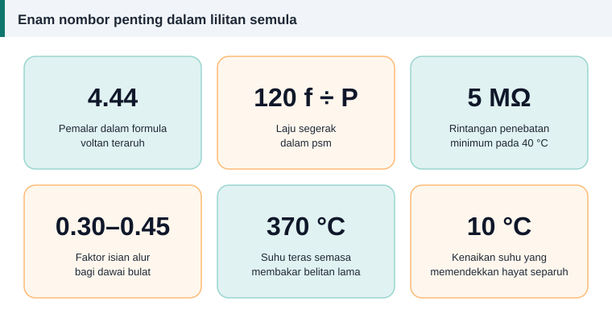

Rujukan
Soal Jawab Lazim Tentang Lilitan Semula Motor
Soalan di bawah dikumpul mengikut topik yang paling kerap menimbulkan kekeliruan. Setiap jawapan ringkas, dengan pautan ke artikel penuh.


Bolehkah saya melilit semula motor tanpa data asal?
Boleh, tetapi ia menjadi kerja reka bentuk, bukan menyalin. Ukur teras, kira alur, tentukan bilangan kutub, kemudian anggarkan belitan dengan kalkulator. Hasilnya anggaran yang munasabah, bukan salinan pengilang, jadi uji arus tanpa beban selepas siap.
Apa akan jadi jika bilangan lilitan kurang atau lebih daripada asal?
Kurang lilitan menaikkan fluks, lalu arus tanpa beban dan suhu naik. Lebih lilitan menurunkan fluks dan tork. Perbezaan satu atau dua peratus biasanya tidak dirasai, tetapi lima peratus sudah ketara. Penjelasannya ada dalam formula lilitan per fasa.
Bolehkah saya menggunakan dawai yang lebih tebal?
Ya, jika ia muat tanpa mengurangkan bilangan lilitan. Lebih banyak kuprum menurunkan rintangan dan suhu. Semak faktor isian alur dahulu.
Bolehkah dawai aluminium diganti dengan kuprum?
Boleh. Kuprum mempunyai kerintangan yang lebih rendah, jadi untuk rintangan yang sama luas kuprum yang diperlukan hanya kira-kira 61% daripada luas aluminium. Kekalkan bilangan lilitan. Kuprum dengan luas yang sama seperti aluminium asal akan mengurangkan kehilangan.
Berapa lama varnis perlu dikeringkan?
Ikut risalah data pengilang varnis. Suhu dan tempoh berbeza antara produk dan bergantung pada saiz stator. Varnis yang belum masak memberi bacaan rintangan penebatan yang rendah.
Mengapa motor yang baru dililit semula cepat panas?
Punca yang lazim ialah bilangan lilitan yang salah, sambungan bintang dan delta tertukar, satu kumpulan gegelung tersambung terbalik, dawai yang lebih kecil daripada asal, galas yang ketat, atau voltan di tapak yang tidak seimbang. Ikuti urutan dalam ujian selepas lilit semula.
Berapa bacaan megger yang dikira lulus?
Bagi belitan dawai bulat voltan rendah, nilai minimum yang disyorkan oleh IEEE 43 ialah 5 MΩ pada 40 °C. Belitan baharu yang kering biasanya jauh lebih tinggi. Lihat ujian megger.
Perlukah galas diganti semasa lilit semula?
Sangat digalakkan. Motor sudah terbuka, dan sebahagian besar kegagalan motor bermula daripada galas. Galas baharu murah berbanding kos membuka motor sekali lagi.
Bolehkah motor 4 kutub ditukar menjadi 2 kutub?
Belitannya boleh dililit begitu, tetapi fluks setiap kutub menjadi dua kali ganda dan kuk stator yang direka untuk 4 kutub akan tepu. Jangan lakukan tanpa pengiraan reka bentuk yang lengkap. Lihat laju segerak dan kutub.
Adakah kalkulator di laman ini menggantikan data pengilang?
Tidak. Ia alat anggaran dan semakan. Jika belitan asal masih ada, salin belitan itu dan gunakan kalkulator untuk mengesahkan bahawa datanya munasabah.
Berapa kos melilit semula motor?
Kos bergantung pada saiz motor, jenis belitan, harga kuprum semasa dan kadar upah tempatan. Minta sebut harga daripada bengkel dan bandingkan dengan harga motor baharu, seperti diterangkan dalam lilit semula atau ganti baharu.
Rujukan dan bacaan lanjut
Artikel berkaitan
Glosari Istilah Lilitan Motor: Bahasa Melayu dan Inggeris
Rujukan pantas istilah lilitan motor dalam bahasa Melayu dengan padanan Inggeris dan maksud ringkas, daripada alur, gegelung dan pic kutub hingga faktor belitan dan varnis.
Apa Itu Lilitan Semula Motor dan Bila Ia Diperlukan
Lilitan semula menggantikan belitan kuprum yang rosak supaya motor berfungsi seperti asal. Kenali bahagian motor, tanda kerosakan belitan dan proses asasnya di sini.
Ujian Selepas Lilit Semula: Rintangan, Keseimbangan dan Arus Tanpa Beban
Motor yang baru dililit semula mesti lulus beberapa ujian sebelum diserahkan. Ikuti urutan daripada pemeriksaan visual hingga arus tanpa beban dan ketahui maksud setiap bacaan.